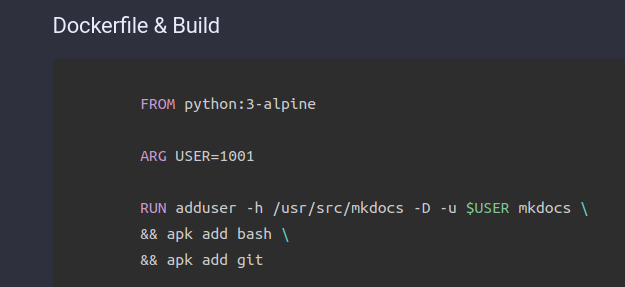

How To Use MKDocs with Docker?¶
TL;DR¶
As wrote on the index page, I changed from Ghost Blog to MKDocs. This was necessary because my Ghost version was really outdated and I could not get used to its new editor.
I have some essential requirement against the platform I use:
- Should be easy to use with native MarkDown support
- Should not have billions of features I won't use ever (to avoid unnecessary system load)
- Must have integrated very good search engine
- Look-And-Feel must be easily customized without plugins or addons
- Since I post a lot of code bloks, code highlighting is must. It should be achieved natively or using prism.js
- Source code of the contents (*.md) should be stored in a Git repository.
What was the alternatives?¶
- CMS Systems
- Drupal, WordPress, Joomla : All of these are CMS systems, and too robust for my purpose. I needed a light-weight system.
- Static Site Generators and
- Jekyll, Gatsby.js, Scully, MKDocs, etc. : They are way more closer to my expectations.
And how I chose up MKDocs over the rest? My selection process was really simple. I gave a try all of them, this means I spent 2 hours to try each of them. The winner was with which I could get closer to my expectations in 2 hours. And of course which was closer to my taste in coding, manageability and flexibility.
Now It seems MKDocs does exactly what I need. Probably most of the other static website generator would have been perfect for me, but after 2 hours of using I found it really comfortable for me. And I did not regret my choice. All of my old contents are migrated to this site, and meantime I did some customization on the the theme and the site. And this is the main topic of this post: How I migrated the content and how I use MKDocs?
Prepare MKDocs Docker Image¶
If you read the official MKDocs installation page you can see that the installation should be done by run python pip install command.
I don't like to install various python packages on my computer, because sooner or later I'm going to stuck in failed requirements. So at the first step I had to make decision what to use: python virtualenv or Docker. Of course I chose Docker.
I do know that "Material for MkDocs" have official Docker image, but I like to use Docker images was built by my own. Every time I build a new Docker image from scratch I learn something or make my knowledge deeper about Dockerfiles, so it's absolutely worth it.
Dockerfile & Build¶
FROM python:3-alpine--> Using the official python image.ARG USER=1001--> Default user id. If you don't specify another when building the container (see below)ENTRYPOINT--> The default command to run when the container starts.
Build command
docker build -t exmaple-mkdocs:v1 --build-arg=USER=$(id -u) .
Important
Docker container will be built using your local user id. This will help you to avoid permission deined when mounting local directory inside the container.
Usage Examples¶
- Get help
docker run -it exmaple-mkdocs:v1 --help
- Create New Site
mkdir /tmp/example/
docker run -it -v /tmp/example:/build exmaple-mkdocs:v1 new /build
This command will create the following initial files (inside the /tmp/example directory on you local system:
.
./docs
./docs/index.md
./mkdocs.yml
Info
With -v parameter you can mount one of your local directory inside the container (bind mount). So the running process iside the container will see your local direcotry /tmp/example as bild. (-v /HOST-DIR:/CONTAINER-DIR). If 'HOST-DIR' is omitted, Docker automatically creates the new volume on the host (default location: /var/lib/docker/volumes).
- Get into the container
docker run -it --entrypoint=/bin/bash exmaple-mkdocs:v1
- Run the builtin development server
docker run -it -p 8789:8000 \
-v /tmp/example:/build exmaple-mkdocs:v1 \
serve --dev-addr 0.0.0.0:8000 --config-file /build/mkdocs.yml
This command may need some explanation:
docker run -it--> Run the container in interactive mode and allocate a pseudo-tty.-p 8789:8000--> Publish container port 8000 on the host port 8789. This means process binding the port 8000 inside the container will be published on the local port 8789.serve --dev-addr 0.0.0.0:8000 --config-file /build/mkdocs.yml--> Arguments of themkdocscommand. (ENTRYPOINT)- The bind port (8000) must be the same as specified at
-pparameter. - Since we bind mounted the
/tmp/examplelocal directory into the container's/buildwe can acces mkdocs.yml inside the container as/build/mkdocs.yml
Now you can access your newly created site at http://localhost:8789 or http://[your machine ip address]:8789.
Every modification inside the /tmp/example directory immediately take effects, so you don't need to restart the container, your browser will refresh the page automatically. But be aware that if you make systax error in the mkdocs.yml the container will exit and you need to manually retart it.
Configure¶
mkdocs.yml¶
Configuring your MKDocs intstance basically means editing mkdocs.yml.
You can see my current configuration below:
I think there is nothing special in this configuration, but could be a good example. Every part of this file is very well documented on the officail Material and MKDocs website:
Info
All the items in the nav section is relative to the docs directory. Example: old/Iptables_Examples.md is located at /tmp/example/docs/old/Iptables_Examples.md
I think the only thing to metion is my extra.css file.
extra.css¶
.md-grid {
max-width: initial;
}
pre[class*="language-"] {
max-height: 32em !important;
}
.md-clipboard {
display: none !important;
}
.md-typeset pre>code {
overflow: unset !important;
padding: unset !important;
}
I know using !important is not the best things to do, but I'm not a web developer and I needed a 'quick and dirty solution'. Maybe later, if I have more time I will customise the mkdocs theme and leave !important.
Info
More about !important: https://stackoverflow.com/questions/9245353/what-does-important-mean-in-css. "Using !important has its purposes (though I struggle to think of them), but it's much like using a nuclear explosion to stop the foxes killing your chickens; yes, the foxes will be killed, but so will the chickens. And the neighborhood."
- md-grid (Material Theme)
Reference: Content area width
The width of the content area is set so the length of each line doesn't exceed 80-100 characters, depending on the width of the characters. While this is a reasonable default, as longer lines tend to be harder to read, it may be desirable to increase the overall width of the content area, or even make it stretch to the entire available space. This can easily be achieved with an additional stylesheet and a few lines of CSS:
.md-grid {
max-width: initial;
}
- pre[class*="language-"] (prismjs)
Add vertical scroll bar when code block contains more than 32 lines.
- md-clipboard (Material Theme)
This section disables the theme built in "copy to clipoad" funcion, it's neccessary if you wish to use the prismjs "copy to clipboard" method.
- md-typeset pre>code (Material Theme)
Some functions of prismj won't work properly without this modification, for example line numbering.
Example:
<pre class="line-numbers language-docker" data-src="/files/Dockerfile"></pre>
Screenshot:

You can see that the line number from the left hand side of the lines are missing.
Build the site¶
If you are done writing your docs, and nav section is properly configured in mkdocs.yml it's time to build your site. I will show three methods to publis the site.
Important
mkdocs serve is absolutely not suitable for production. It's only purpose to help you developing the site, and watch real-time your modification.
Build Site & Own Web Server¶
If you already have a web servers you can simply copy your content to the DocmentRoot.
You can simply build your site:
docker run -it \
-v /tmp/example:/build exmaple-mkdocs:v1 \
build
This command will put your static html site into the /tmp/example/site directory on your host machine.
Or you can specify where to store the generated content:
docker run -it \
-v /tmp/example:/build exmaple-mkdocs:v1 \
-v /var/www/html/mysite:/site \
build --site-dir /site
Build Site & Nginx with Docer¶
This method almost the same as the previous one, except that here we are using another Docker container to server our page. First build your site with buld command.
Server your page with Nginx
First start your container in the foreground to check if everything is fine:
docker run -it --rm \
--name mkdocs \
-v [PATH TO YOUR SITE DIR]:/usr/share/nginx/html:ro \
-p 8087:80 \
nginx:latest
If you can access your site on the host port 8087, you should stop the container (ctrl+c) and start again in detached mode:
docker run -d \
--restart alaway \
--name mkdocs \
-v [PATH TO YOUR SITE DIR]:/usr/share/nginx/html:ro \
-p 8087:80 \
nginx:latest
More about Nginx container image: https://hub.docker.com/_/nginx
GitHub Pages¶
This is the method I use. I'm not borering with own web server instead I use github pages: https://pages.github.com
For this you need a free Github registration.
- 1. Create a repository

The name of the repository must be [your username].github.io and must be public. In my case:

- 2. Push
Github does not support user/pass auth anymore, so you need to create an auth token.
Go to settings:

Developer settings:

And Personal access tokens:
Finally click on the Generate new token, select the permissions you need and generate the token.
Push your mkdocs root dir:
ls -al
total 40
drwxr-xr-x 7 root root 4096 Oct 9 14:34 .
drwx------ 22 root root 4096 Oct 9 14:33 ..
drwxr-xr-x 6 root root 4096 Oct 9 14:33 cinder
-rw-r--r-- 1 root root 162 Oct 9 14:33 docker.cmd
drwxr-xr-x 8 root root 4096 Oct 9 14:33 docs
drwxr-xr-x 8 root root 4096 Oct 9 14:35 .git
-rw-r--r-- 1 root root 4471 Oct 9 14:33 mkdocs.yml
drwxr-xr-x 2 root root 4096 Oct 9 14:33 overrides
drwxr-xr-x 11 root root 4096 Oct 9 14:33 site
git init
git add --all
git commit -m 'Initial release'
git remote add origin https://github.com/jvincze84/test-delete.git
git push -u origin master- 3. Push gh-pages
clear
docker run -it -v /root/test-delete/:/usr/src/mkdocs/build example-mkdocs:v2 gh-deploy
INFO - Cleaning site directory
INFO - Building documentation to directory: /usr/src/mkdocs/build/site
INFO - Documentation built in 1.04 seconds
WARNING - Version check skipped: No version specified in previous deployment.
INFO - Copying '/usr/src/mkdocs/build/site' to 'gh-pages' branch and pushing to GitHub.
Username for 'https://github.com': jvincze84
Password for 'https://jvincze84@github.com':
Enumerating objects: 219, done.
Counting objects: 100% (219/219), done.
Delta compression using up to 8 threads
Compressing objects: 100% (109/109), done.
Writing objects: 100% (219/219), 14.91 MiB | 9.50 MiB/s, done.
Total 219 (delta 72), reused 219 (delta 72), pack-reused 0
remote: Resolving deltas: 100% (72/72), done.
remote:
remote: Create a pull request for 'gh-pages' on GitHub by visiting:
remote: https://github.com/jvincze84/test-delete/pull/new/gh-pages
remote:
To https://github.com/jvincze84/test-delete.git
* [new branch] gh-pages -> gh-pages
INFO - Based on your CNAME file, your documentation should be available shortly at: http://readthedocs.vinczejanos.info
INFO - NOTE: Your DNS records must be configured appropriately for your CNAME URL to work.We are almost done. Go back to Github, and set up the newly created "gh-pages" branch for pages:

- 4. Custom Domain
Github publishes your content to "https://[username].github.io" (example: jvincze84.github.io). If you want to use your custom domain, put a file into the docs folder with name CNAME:
cat docs/CNAME
readthedocs.vinczejanos.info
But first you need to create a CNAME DNS record which points to "[username].github.io". Godaddy example:

Warning
Do not modify your custom domain directly on github.com; mkdocs gh-deploy will overwrite your config.
Update The Site¶
If you want to update a page or add new pages you can follow these steps:
Clone your repository
git clone https://github.com/jvincze84/jvincze84.github.io
Cloning into 'jvincze84.github.io'...
remote: Enumerating objects: 850, done.
remote: Counting objects: 100% (850/850), done.
remote: Compressing objects: 100% (292/292), done.
remote: Total 850 (delta 351), reused 820 (delta 327), pack-reused 0
Receiving objects: 100% (850/850), 16.09 MiB | 10.59 MiB/s, done.
Resolving deltas: 100% (351/351), done.Info
If you want to save your git credentials run this command: git config --global credential.helper store
After you have done the neccessary modification (add/change page) push your changes:
Warning
If you add a new page (.md) don't forget to add it to the nav section in mkdocs.yml
push to git
git add docs/How_to_use_MKdocs.md mkdocs.yml
git commit -m 'Add new page : docs/How_to_use_MKdocs.md'
master 0949efa] Add new page : docs/How_to_use_MKdocs.md
1 file changed, 25 insertions(+), 9 deletions(-)
git push
Enumerating objects: 7, done.
Counting objects: 100% (7/7), done.
Delta compression using up to 4 threads
Compressing objects: 100% (4/4), done.
Writing objects: 100% (4/4), 993 bytes | 993.00 KiB/s, done.
Total 4 (delta 3), reused 0 (delta 0)
remote: Resolving deltas: 100% (3/3), completed with 3 local objects.
To https://github.com/jvincze84/jvincze84.github.io
a9585e6..0949efa master -> mastergh-deploy
Finally apply the modification on Github Pages
docker run -it --rm \
-v /home/mkdocs/Documents/mkdocs/jvincze84.github.io/:/usr/src/mkdocs/build \
mkdocs:1 gh-deploy
If you previously saved your git credentials you may want to use it inside the container:
docker run -it --rm \
-v /home/mkdocs/.git-credentials:/usr/src/mkdocs/.git-credentials \
-v /home/mkdocs/Documents/mkdocs/jvincze84.github.io/:/usr/src/mkdocs/build \
mkdocs:1 gh-deploy